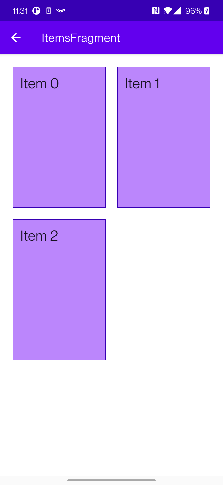
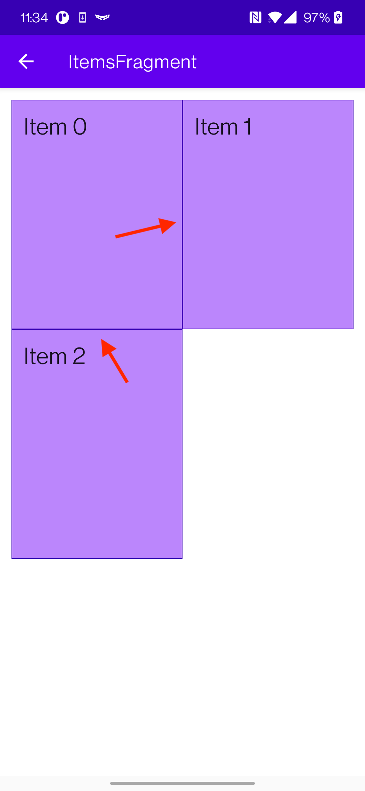
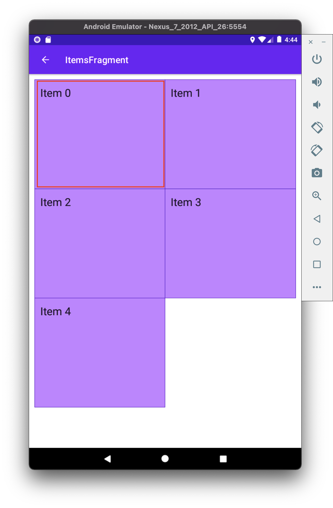

BLOG: Merged grid
Merging adapter BGs
..or how to use ’Shapes’ in Android to use merged backgrounds in RecyclerView.Adapter when using GridLayoutManager. Good thing the title is not long enough ü§¶
I don’t see tutorials where you would get in trouble when displaying items in a list. But things get dicey when you start to apply a bit more complicated strategies for your use case.
For instance, have you tried using ConcateAdapter using adapters in a multiple spans GridLayoutManager? Or just simply using a regular RecyclerView.Adapter with GridLayoutManager to display items with separators instead of paddings?
For the last couple of weeks, I’ve seen quite a bit of adapters. So I wanted to share some of the take-aways ü§∑
Oh, and don’t forget to check out Github repo for the sample app!
Double separator issue
To apply backgrounds to RecyclerView.Adapter items are simple enough. So, where is the problem?
Well, as always, it depends. If you have a list where items are separated, there is no problem.

However, it starts to be an issue whenever the items become much closer. So close, as like having no padding at all. Then this happens üëá

You get ’double lines’ as separators. And this was what I was actually aiming for üëá

How do we solve it? Well, a few solutions come to mind. We either have to change backgrounds or use separators that RecyclerView supports.
Using separators (failed attempt)
I’ll say from the get-go that this did not work out for me after a couple of tries. If you’re here only for the solution, move a bit downward.
Issue #1
At #1, separators seem like a go-to solution. Even the name tells us as much ü§∑.
It may seem to fix our problem, right? Well, no. This does not work when trying to use it in RecyclerView + GridLayoutManager.
The first problem is that ’separators’ are applied to the whole RecyclerView. So if you have GridLayoutManager with a grid span of 2+, it would use a separator for the entire section.
Issue #2
Problem #2, when you apply separators, it applies only in the direction you are separating the items. If you try to modify the RecyclerView with MaterialDividerItemDecoration, it has no problem when scrolling in provided direction. However, it does if you would try to draw ’separators’ in the direction where the items do not scroll.
Issue #13489579817235
The last nail in the coffin ‚ö∞Ô∏è was when or if you’re using ConcatAdapter. I won’t go into too much detail, but this majorly breaks most of what you wanted to achieve.
Even though I could not use separators on my use case, but I can’t deny that it was a good learning experience. You can even try out using my updated separator if you wish so, as a starting point if you’re adventurous enough. It is heavily ’inspired’ by MaterialDividerItemDecoration.
Using different backgrounds (success üôå)
In some sense, this seems a bit counterintuitive and a more complicated solution than it should be. And I still think this is the case. However, I did manage to get a working solution and I’m pretty happy about it. At least for now.
The trick
The whole idea is simple.
- We provide a different background to a cell, depending on where the cell is.
- Provide a background line where only it is needed
It is a bit difficult to explain in words, so I’ll try to call my drawing superpowers ü¶∏.
Drawing Android shapes
Oh, and I almost forgot. This is how you provide a background using Android shapes. If you want to control how you draw different backgrounds with provided borders, you’ll need this.
Declare an xml with a
shapein{project}/app/src/main/res/drawable/shape.xml<?xml version="1.0" encoding="utf-8"?> <?xml version="1.0" encoding="utf-8"?> <layer-list xmlns:android="http://schemas.android.com/apk/res/android"> <item> <shape> <padding android:left="1dp" android:top="1dp" android:right="1dp" android:bottom="1dp"/> <solid android:color="@color/cardStroke" /> </shape> </item> <item> <shape> <solid android:color="@color/cardBackground" /> </shape> </item> </layer-list>
And use that background on any container (
ViewGroup)<?xml version="1.0" encoding="utf-8"?> <?xml version="1.0" encoding="utf-8"?> <FrameLayout xmlns:android="http://schemas.android.com/apk/res/android" xmlns:app="http://schemas.android.com/apk/res-auto" xmlns:tools="http://schemas.android.com/tools" android:layout_width="match_parent" android:layout_height="wrap_content" android:background="@drawable/shape_ll_basic"> <!-- ☝️ Declared background--> <... xml content ... /> </FrameLayout>
Moving to the 1st item
It’s important to know where is the first row and where is the first item in the column. For the first item, we provide a background, that has all the corners drawn. Like so.

Moving to the right üëâ
Next, we should define the background for the item next to it. But, because we already have a left bar in the background, we should append only top, bottom, and right bars. Like so üëá

You’re probably starting to catch the drift of how we’re composing these backgrounds by only appending bars only where it is needed.
The coolest part about it, if we had more items to the right, we would only need to apply the same background - top, bottom, and right bars. Like so

Moving downwardüëá
Alright. Now that we know how to display the whole row, we need to move downwards.
Once again, the most important thing is to know which item is first. As we know, this is not the first row, and we already have a top bar. So, what we need are left, right, and bottom bars.

And the rest of the items on the right would require only left and bottom, as we already have top and left bars.

And this works really well for the rest of the items as well if we would provide more items in the grid üëá

The code
Now that we know the basic premise of what we’re aiming for let us see how we implement the RecyclerView.Adapter. The coolest part is that there is not much logic here. As stated before, we only need to figure out
Is the item in the first row
private fun isItemInFirstRow(pos: Int): Boolean { return pos <= gridSpanSize - 1 }
Is the item first in column
private fun isItemInFirstColumn(pos: Int): Boolean { return pos % gridSpanSize == 0 }
The rest of the adapter looks nothing out of ordinary.
class MergeAdapter<T : BasicAdapterItem>( private val gridSpanSize: Int, private val itemClickListener: ((BasicAdapterItem) -> Unit)? = null, ) : RecyclerView.Adapter<MergeAdapterViewHolder<T>>(), ItemBoundableAdapter<T> { override var items: List<T> by Delegates.observable(emptyList()) { _, oldList, newList -> autoNotify(oldList, newList) { o, n -> o.id == n.id } } override fun onCreateViewHolder( viewGroup: ViewGroup, viewType: Int ): MergeAdapterViewHolder<T> { return MergeAdapterViewHolder.create(viewGroup) } override fun onBindViewHolder( holder: MergeAdapterViewHolder<T>, position: Int, ) { val isItemInFirstRow = isItemInFirstRow(position) val isItemInFirstColumn = isItemInFirstColumn(position) val item = items[position] holder.bind( isItemInFirstRow, isItemInFirstColumn, item, itemClickListener ) } /** * @return item position is in the first row */ private fun isItemInFirstRow(pos: Int): Boolean { return pos <= gridSpanSize - 1 } /** * @return item position is in the first column, when on different rows */ private fun isItemInFirstColumn(pos: Int): Boolean { return pos % gridSpanSize == 0 } override fun getItemCount(): Int = items.size }
Now we provide the resolved properties to the ViewHolder to draw items.
Snippet to apply the background
/** * Provides diff background based on item position in the grid * @param isFirstRow item is in the first row of the grid * @param isFirstColumn item is in the first column of the row */ @DrawableRes private fun bgResourceByPosition( isFirstRow: Boolean, isFirstColumn: Boolean, ): Int { return when { isFirstRow && isFirstColumn -> R.drawable.shape_ll_merge_row_column_first isFirstRow && !isFirstColumn -> R.drawable.shape_ll_merge_row_column_last isFirstColumn -> R.drawable.shape_ll_merge_column_first else -> R.drawable.shape_ll_merge_column_last } }
Rest of the
ViewHolderis nothing out of ordinaryclass MergeAdapterViewHolder<T : BasicAdapterItem>( private val binding: ItemMergedBinding, ) : RecyclerView.ViewHolder(binding.root) { fun bind( isFirstRow: Boolean, isFirstColumn: Boolean, item: T, itemClickListener: ((T) -> Unit)? ) { val viewClickListener = toViewClickListenerOrNull(item, itemClickListener) binding.root.setOnClickListener(viewClickListener) binding.title.text = item.title binding.root.setBackgroundResource(bgResourceByPosition(isFirstRow, isFirstColumn)) } /** * Provides diff background based on item position in the grid * @param isFirstRow item is in the first row of the grid * @param isFirstColumn item is in the first column of the row */ @DrawableRes private fun bgResourceByPosition( isFirstRow: Boolean, isFirstColumn: Boolean, ): Int { return when { isFirstRow && isFirstColumn -> R.drawable.shape_ll_merge_row_column_first isFirstRow && !isFirstColumn -> R.drawable.shape_ll_merge_row_column_last isFirstColumn -> R.drawable.shape_ll_merge_column_first else -> R.drawable.shape_ll_merge_column_last } } companion object { fun <T : BasicAdapterItem> create(viewGroup: ViewGroup): MergeAdapterViewHolder<T> { return MergeAdapterViewHolder( binding = ItemMergedBinding.inflate( LayoutInflater.from(viewGroup.context), viewGroup, false ) ) } } }
As always, if the code snippets are not enough, check out the sample app on Github and try it yourself! It has basic adapters, adapters with paddings, and merged background adapters (what we were trying to do here) to try out üí™.
Ending notes
Now. This is not exactly rocket science for sure. However, I did not think twice when picking up the task. By starting to dig deeper, I have realized how many parts I need to figure out first for the designs to be accurate.
Hopefully, this will be useful for you as well, and you won’t need to spend so much time as I did ü§∑üöÄ.